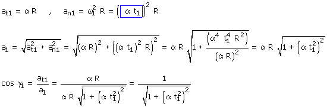
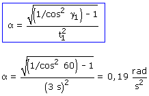

Primero hay que buscar la relación entre aceleración angular y el ángulo aceleración-velocidad
 |
 |
Aplicación:
Datos: t1 = 3 s, γ = 60º Incógnita: α

Primero hay que buscar la relación entre aceleración angular y el ángulo aceleración-velocidad
Aplicación: Datos: t1 = 3 s, γ = 60º Incógnita: α  |